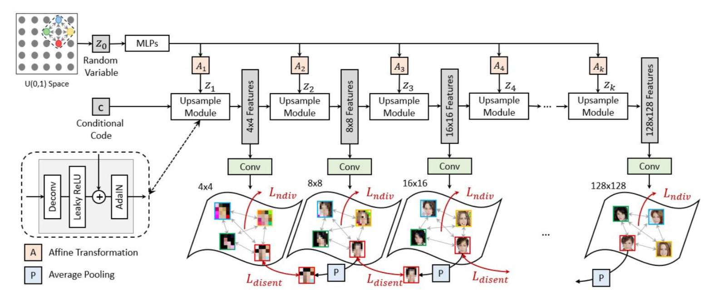

|
Jie Min Grad Student of ROBO & CIS University of Pennsylvania / GRASP Lab Philadelphia, PA Email: minjie@seas.upenn.edu [Resume] [Linkedin] [GitHub] [Google Scholar] |
My research interests are in computer vision, machine learning, deep learning, image processing, and computer graphics & animation. Research at GRASP Lab Upenn, advised by Prof. Jianbo Shi.
Education
|
MASTER OF SCIENCE IN ENGINEERING, ROBOTICS Fall 2019 - Fall 2021 GPA 4.0/4.0 Selected Courses:[Advanced Topic in Explainable AI (CIS700) A+] [Advanced Topic in Machine Perception (CIS680) A][Machine Perception (CIS580) A+] [Deep Learning in Data Science (CIS522) A] [Big Data (CIS545) A] [Linear,NonlinearandIntegerOptimization (ESE504) A] |
|
|
|
Research Assistant in Computer Science @ LILY Lab Summer 2017 - Fall 2017 Cross-Domain Attribute-Disentangling Network for Visual Food Recognition, Annotation and Generation (Submitted to CVPR19) |
|
Exchange Program in Computer Science Summer 2016 - Fall 2016 GPA 4.0/4.0 |
Publications
|  |
Nested Scale-Editing for Conditional Image Synthesis Lingzhi Zhang, Jiancong Wang, Jie Min, Yinshuang Xu, Tarmily Wen, James C. Gee, Jianbo Shi To appear in CVPR, 2020. [Paper] [Bibtex] |


|
Liquid Warping GAN: A Unified Framework for Human Motion Imitation,
Appearance Transfer and Novel View Synthesis Wen Liu, Zhixin Piao, Min Jie, Wenhan Luo, Lin Ma, Shenghua Gao In ICCV, 2019. [Paper] [Webpage] [Dataset] [GitHub] [Talk] [Bibtex] |
|
|
Mental Replay: Learning Diverse Object Placement by Inpainting for Compositional Data Augmentation Lingzhi Zhang, Tarmily Wen, Jie Min, Jiancong Wang, David K. Han, Jianbo Shi To appear in ECCV, 2020. [Paper] |
Course & Research Projects
|
Semantic Scene Composition for Amodal Instance Segmentation Spring 2020 [ Report ] |
|
|
LSTM-PPO: Memory Adaptive PPO and other methods to Reinforcement Learning in Car Racing Task Perception Course Project Fall 2019 [ Report ] |
|
|
DAVid GAN: Detect Anomalies in Video with GAN Spring 2018 |
|
|
Training a Sparse-Reward Agent for First-Person Shooter Game using DDRQN and Curriculum Learning Artificial Intelligence Course Project Spring 2017 [ Report ] [Video] |
[Nov 2018] Auto-Picking - Protein Particle Recognition and Segmentation in Cryo-electron Microscopy using Regions with CNNs Features (RCNN). {Independent Research Project}
[Fall 2018] Using Kinect to Detect Human Skeleton and Gestures Point-To-Point Control AR Game Models to Fight. {Computer Vision Course Project}
[Aug 2017] MURA Musculoskeletal Radiographs Bone X-Ray Deep Learning Competition Stanford Machine Learning Group. {Independent Research Project}
[Spring 2017] A Near-Linear Time Algorithm for Computing Replacement Paths in Planar Directed Graphs. [ Report ] {Advanced Algorithm Course Project}
Teaching
Computer Vision & Computational Photography (CS 581), University of PennsylvaniaTeaching Assistant (TA) with Prof. Jianbo Shi
Spring 2020 & Summer 2020
Computer Vision (CS 172), ShanghaiTech University
Teaching Assistant (TA)
Fall 2017
Algorithms (CS 140), ShanghaiTech University
Teaching Assistant (TA)
Fall 2017
Data Structure (CS 101W), ShanghaiTech University
Teaching Assistant (TA)
Fall 2016
Introduction to Programming (CIS100A), ShanghaiTech University
Teaching Assistant (TA) Spring 2016